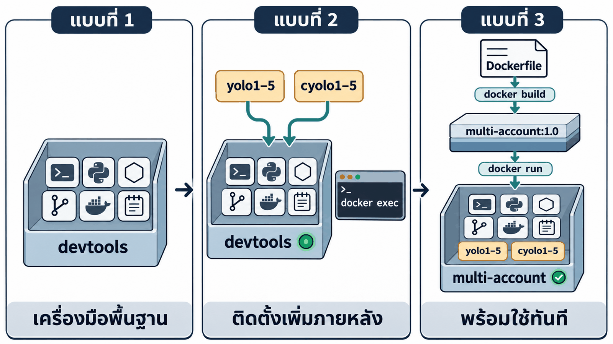
| แบบที่ 1 · devtools | แบบที่ 2 · ติดตั้งภายหลัง | แบบที่ 3 · build จาก Dockerfile | |
|---|---|---|---|
| บทเรียน | 01_Docker_VSCode_Setup | 02_Setup_Multi_Account | บทนี้ |
| จุดเริ่มต้น | image tuchsanai/devtools:2569_1 | container devtools | Dockerfile |
| ระบบหลายบัญชี | ไม่มี | ติดตั้งผ่าน docker exec | ติดตั้งตั้งแต่ขั้น build |
| ล็อกอินเก็บที่ | – | ภายใน container | volume ai-accounts |
| เมื่อลบ container | ได้เครื่องมือพื้นฐานชุดเดิม | ติดตั้งและล็อกอินใหม่ | docker run ใหม่ พร้อมใช้ทันที |
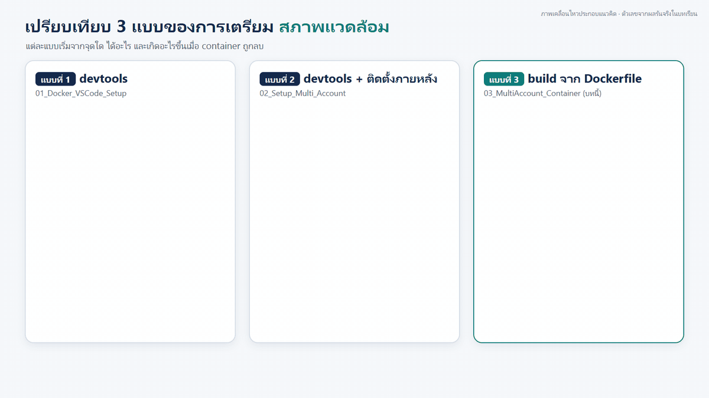
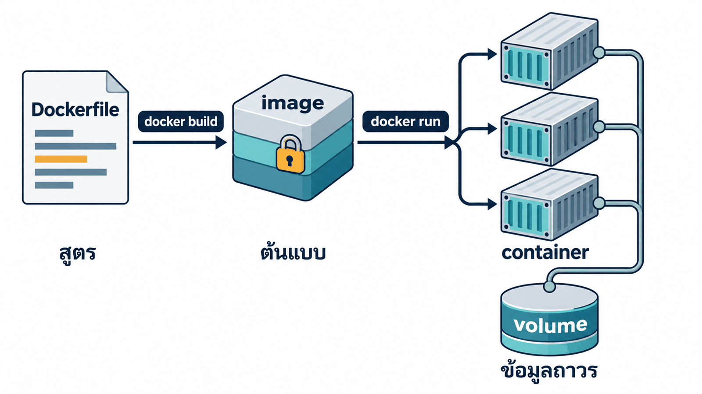
| องค์ประกอบ | ในบทนี้ |
|---|---|
| Dockerfile ขั้นตอนการสร้าง image | MultiAccountDevtool/Dockerfile |
| image ต้นแบบ อ่านอย่างเดียว | multi-account:1.0 |
| container ตัวที่ทำงานจริง | multi-account |
| volume ข้อมูลคงอยู่แม้ลบ container | ai-accounts |
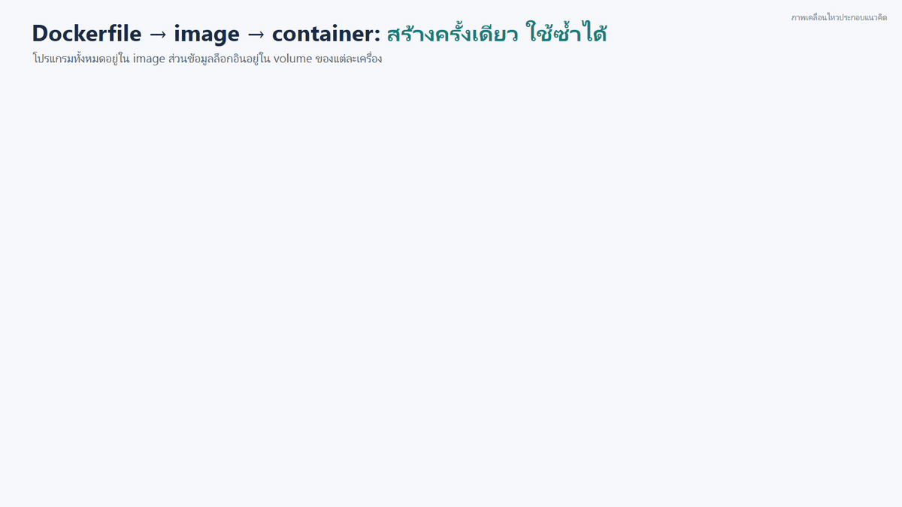
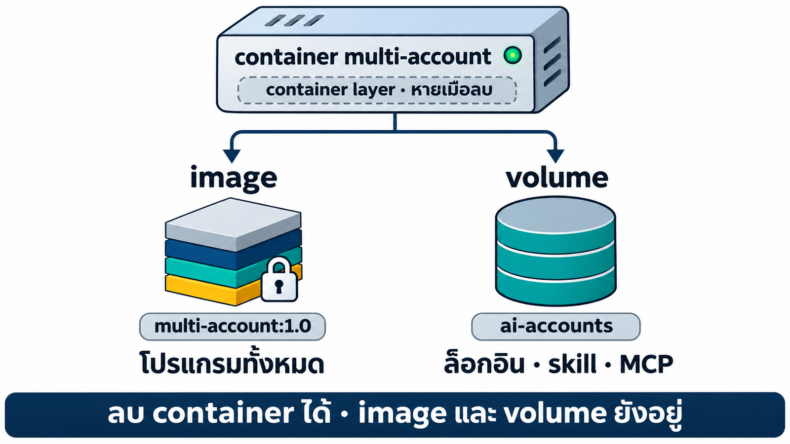
| ส่วน | เมื่อลบ container |
|---|---|
| ชั้นของ image (4 ชั้น) โปรแกรมทั้งหมด | ยังอยู่ |
| container layer ไฟล์งานใน /workspace · docker cp ออกก่อนลบ | หายไป |
| volume ai-accounts ล็อกอิน · skill · MCP | ยังอยู่ |
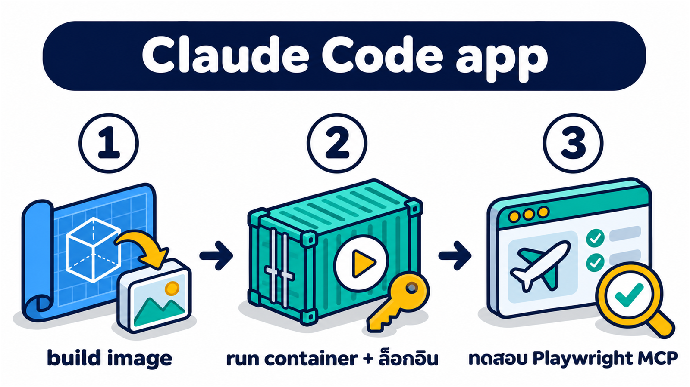
| ขั้น | ผู้ดำเนินการ | เวลา |
|---|---|---|
| 1 build image | Claude | ~28 นาที |
| 2 สร้าง container + ล็อกอิน | Claude + ผู้เรียน | ~1 + 15 นาที |
| 3 ทดสอบ Playwright MCP | Claude | ~5 นาที |
Docker Desktop แสดง Engine running
Claude Code app ล็อกอินแล้ว
พื้นที่ดิสก์ว่างอย่างน้อย ~10 GB
image ~4.5 GB + build cache
Code → New session → เลือกโฟลเดอร์ 03_MultiAccount_Container
03_MultiAccount_Container/ ├── 00_Devtool_Container/ ← Dockerfile มาตรฐานของ devtools (input ที่ 1) ├── prompt_multi_account.md ← สเปกระบบหลายบัญชี (input ที่ 2) └── _solution/ ← เฉลยจากการรันจริง (หากต้องการให้ Claude ทำเองทั้งหมด ให้ย้ายโฟลเดอร์นี้ออกก่อน)
อ่านสเปก + Dockerfile มาตรฐาน → เขียน MultiAccountDevtool/ → docker build → ทดสอบ (~30 นาที)
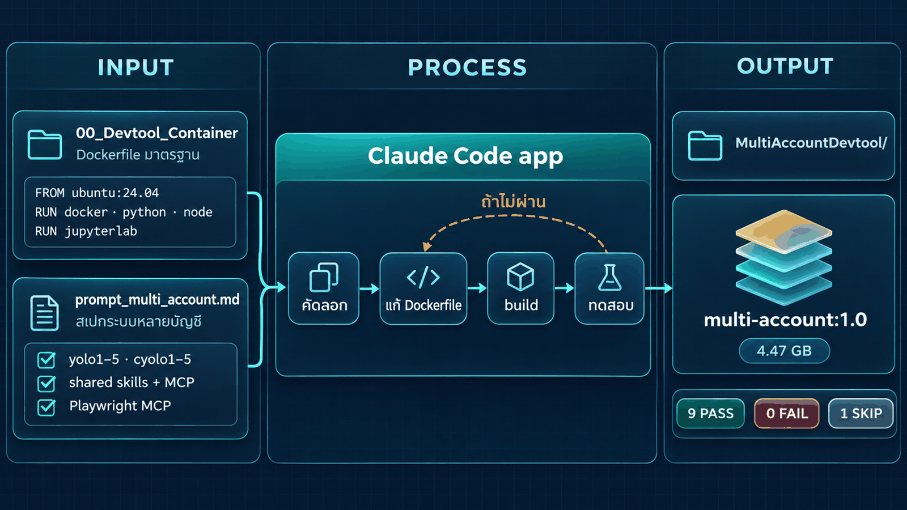
| หัวข้อ | สาระ |
|---|---|
| เป้าหมาย | yolo1–5 (Claude Code) และ cyolo1–5 (Codex CLI) แยกโฟลเดอร์ต่อบัญชี + shared สำหรับ skill และ MCP กลาง |
| กติกา | แยก credential ต่อบัญชี · installer รันซ้ำได้ไม่ทับของเดิม · MCP ตัวแรก Playwright · skill ตัวอย่าง shared-check |
| ข้อเท็จจริงจากการทดลอง | ข้อควรรู้เฉพาะของแต่ละ CLI ที่พบจากการรันจริง |
| ทดสอบ | เกณฑ์ PASS / FAIL / SKIP |
| รายงาน | setup-report.md · login-guide.md · checklist.md |
นำมาจากพรอมต์ขั้นที่ 1 ของบท 02_Setup_Multi_Account บทนั้นติดตั้งลงใน container ที่กำลังทำงาน บทนี้ใช้เป็นข้อกำหนดของ image
ตรวจ --help ของเวอร์ชันจริงก่อนใช้ env/flag ห้ามเดา
## เป้าหมาย (BASE=/root/ai-accounts)
- yolo1..yolo5 → claude --dangerously-skip-permissions (CLAUDE_CONFIG_DIR=$BASE/.Claude/yoloN)
- cyolo1..cyolo5 → codex --dangerously-bypass-approvals-and-sandbox (CODEX_HOME=$BASE/.Codex/cyoloN)
- wrapper วางใน /usr/local/bin ให้พิมพ์ได้ทันที ส่งต่อ "$@" ครบ แจ้งชัดถ้าโฟลเดอร์บัญชีไม่มี ไม่พิมพ์ secret
- $BASE/.Claude/shared และ $BASE/.Codex/shared มี skills/ และ mcp/ แก้ครั้งเดียว ทุกบัญชีของ CLI นั้นเห็นตอนเปิดครั้งถัดไป
## กติกา
- แยก credential/config/session ต่อบัญชี เปิดพร้อมกันได้ ใช้ CLAUDE_CONFIG_DIR/CODEX_HOME เท่านั้น ห้ามเปลี่ยน $HOME
- Codex ใช้ file-based credential ต่อ CODEX_HOME ห้ามแชร์ credential ใน shared
- สร้าง installer เป็นไฟล์ใน container รันซ้ำได้ ไม่เขียนทับ credential/config เดิม ห้ามแก้ .bashrc/Git/SSH
- MCP ส่วนกลางตัวแรก: Playwright (@playwright/mcp) + Chromium ติดตั้งครั้งเดียว
- skill ตัวอย่าง shared-check: ตอบ SHARED_SKILL_OK-<tool>-<ค่าสุ่มตอนติดตั้ง> ซึ่งมีในไฟล์ skill เท่านั้น
## ข้อเท็จจริงจากการทดลอง (ตรวจว่ายังจริงกับเวอร์ชันนี้)
- root ต้องตั้ง IS_SANDBOX=1; CODEX_HOME ต้อง mkdir -p ก่อน
- Claude: skill อ่านจาก $CLAUDE_CONFIG_DIR/skills; MCP ส่งผ่าน --mcp-config=<ไฟล์> (ต้องมี =)
ห้าม symlink .claude.json (มีสถานะล็อกอิน); claude mcp list ไม่แสดง MCP นี้ ให้ตรวจด้วย /mcp
- Codex: skill อ่านจาก $CODEX_HOME/skills และเขียน skills/.system เอง ห้าม symlink ทั้งโฟลเดอร์
MCP ส่งด้วย -c mcp_servers.<name>={...} (ใช้กับ codex mcp list ได้)
- Playwright ใน root container: --browser chromium --headless --isolated --no-sandbox และ --output-dir นอกโฟลเดอร์งาน
ติดตั้ง Chromium ด้วย playwright ในแพ็กเกจ @playwright/mcp ให้เวอร์ชันตรงกัน (อาจต้อง install-deps)
## ทดสอบใน container (PASS/FAIL/SKIP ตามจริง)
- 10 คำสั่ง --version ครบ, config root คนละโฟลเดอร์, installer รอบ 2 ไม่ทำลายของเดิม
- cyoloN mcp list เห็น playwright, skill shared-check ทุกบัญชี readlink -f ไปไฟล์เดียวกันใน shared
- อะไรที่ต้องล็อกอิน = SKIP
## รายงาน (ห้ามมี secret)
- setup-report.md: โครงสร้างโฟลเดอร์, wrapper, แต่ละ CLI อ่าน skill/MCP จากไหน, ข้อจำกัด
- login-guide.md: ล็อกอินทีละบัญชีใน JupyterLab Terminal
- checklist.md: รายการ | หลักฐาน | PASS/FAIL/SKIP
เสร็จแล้วสรุปเป็นตารางสั้น ๆ แล้วหยุดรอ ห้ามล็อกอินแทนฉัน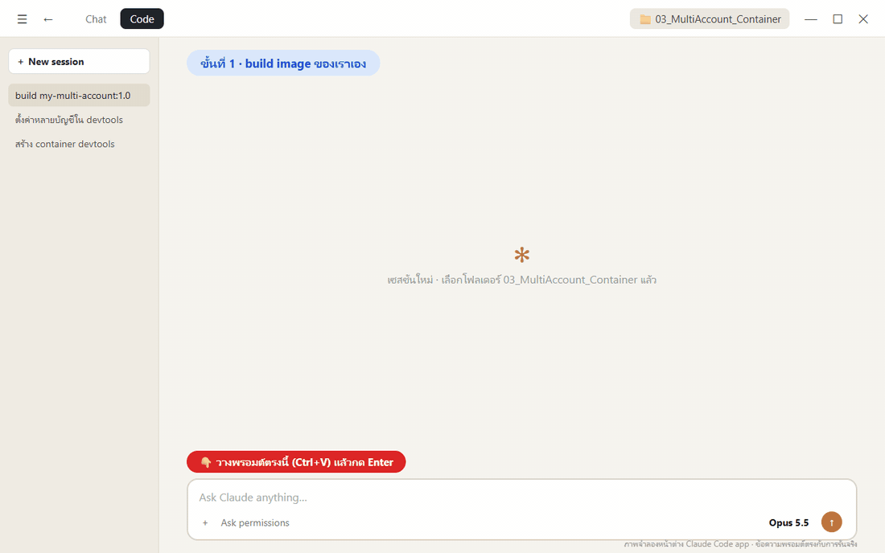
ช่วยสร้าง Docker image ชื่อ multi-account:1.0 ที่เปิดมาแล้วใช้หลายบัญชี AI ได้ทันที ทำในโฟลเดอร์นี้ ใช้คำสั่ง docker ได้ แต่ห้ามลบ หยุด หรือแก้ container / image / volume ที่มีอยู่ (ห้าม docker system prune และห้ามแตะ volume ai-accounts) วัตถุดิบ - ./00_Devtool_Container = Dockerfile มาตรฐานของ devtools คัดลอกเป็น ./MultiAccountDevtool แล้วแก้ในนั้นเท่านั้น ถ้ามี ./MultiAccountDevtool อยู่แล้ว ให้เทียบกับสเปกแล้วแก้เฉพาะที่ขาด - ./prompt_multi_account.md = สเปกระบบหลายบัญชี ทุกข้อต้องเป็นจริงใน image ส่วน "ข้อเท็จจริงจากการทดลอง" ให้ตรวจกับ --help ของเวอร์ชันจริงก่อนใช้ สิ่งที่ต้องอยู่ใน image - Claude Code, Codex CLI, Playwright MCP (pin เวอร์ชัน) + Chromium + ฟอนต์ไทย - installer และคำสั่ง yolo1..5 / cyolo1..5 ใน /usr/local/bin ใช้ได้ทั้งใน JupyterLab Terminal และ docker exec - ห้ามมีข้อมูลล็อกอินใน image: /root/ai-accounts เป็น volume และ installer รันทุกครั้งที่ container start โดยไม่ทับของเดิม - คง Docker-in-Docker และ JupyterLab ไว้ build ด้วย: docker build -t multi-account:1.0 ./MultiAccountDevtool ทดสอบด้วย container และ volume ทดสอบชื่อใหม่ แล้วลบทิ้งเมื่อเสร็จ (PASS/FAIL/SKIP ตามจริง) - yolo1..5 / cyolo1..5 --version ครบ 10 คำสั่ง และ config root คนละโฟลเดอร์ - skill shared-check ทุกบัญชีชี้ไปไฟล์เดียวกันใน shared และ cyolo1 mcp list เห็น playwright - Playwright MCP ผ่าน stdio เปิด https://example.com แล้ว screenshot ได้ - installer รอบ 2 ไม่ทับของเดิม และลบ container แล้วสร้างใหม่ ของใน volume ยังอยู่ - JupyterLab /lab ตอบ 200 ข้อที่ต้องล็อกอิน = SKIP ห้ามล็อกอินแทนผม เขียนรายงานตามหัวข้อ "รายงาน" ของสเปกไว้ใน ./MultiAccountDevtool (ห้ามมี secret) เสร็จแล้วสรุปเป็นตารางสั้น ๆ: ผลทดสอบ ขนาด image และเวลา build แล้วหยุด
Claude ไม่ต้องคาดเดาฐานของ image หรือโครงสร้างระบบหลายบัญชี
โปรแกรมอยู่ใน image ข้อมูลล็อกอินอยู่ใน volume การแชร์ image จึงไม่เปิดเผยบัญชี
ทดสอบด้วย container และ volume ชั่วคราวแล้วลบทิ้ง
ตรวจผลจากหลักฐานได้ ไม่ต้องอาศัยคำบอกเล่าของ AI
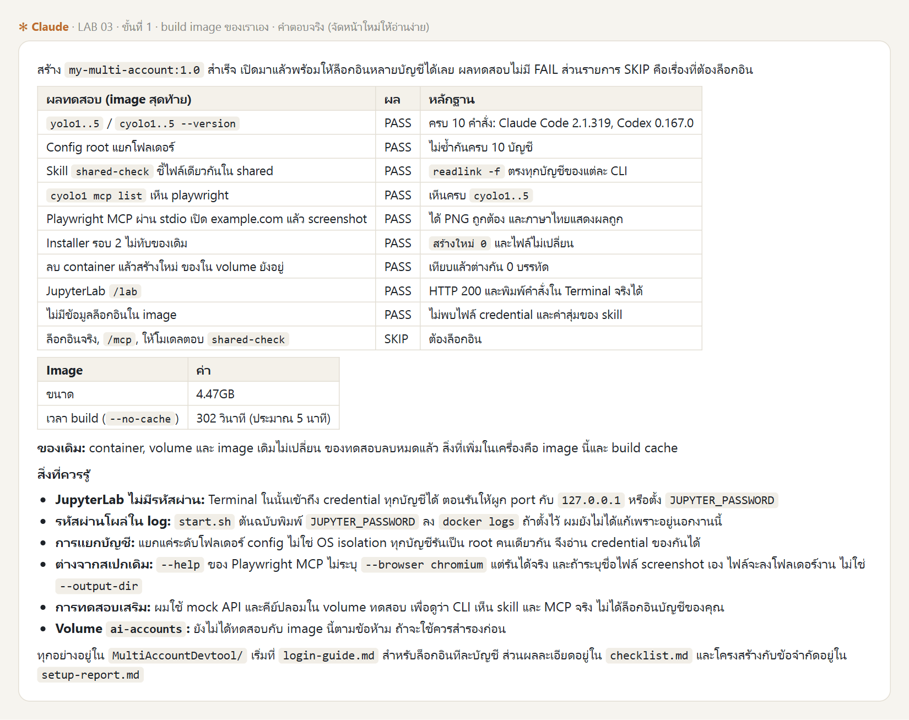
9 PASS 0 FAIL 1 SKIP
| ขนาด image | 4.47 GB |
| build แบบไม่ใช้ cache | 302 วินาที |
| Claude Code | 2.1.319 |
| Codex CLI | 0.167.0 |
| Playwright MCP | 0.0.84 |
SKIP คือข้อที่ต้องล็อกอิน · ตอนรันจริงใช้ชื่อ my-multi-account ภาพผลจริงปรับชื่อให้ตรงกับบทเรียน
MultiAccountDevtool/ ├── Dockerfile ← Dockerfile ของ devtools + 4 ชั้นใหม่ (CLI, Playwright, ฟอนต์ไทย, ระบบหลายบัญชี) ├── start.sh ← dockerd + multi-account-install (ทุกครั้งที่ start) + jupyter lab ├── multi-account/ ← installer, wrapper ของ yoloN/cyoloN, ตัวแปลง MCP ให้ Codex ├── docker-compose.yml ← ทางเลือก: build + run ด้วยคำสั่งเดียว └── setup-report.md · login-guide.md · checklist.md ← รายงาน 3 ไฟล์ตามสเปก
เก็บเป็นเฉลยไว้ที่ _solution/MultiAccountDevtool/
image เป็นแม่แบบอ่านอย่างเดียว ต้อง docker run เป็น container ก่อนจึงใช้งานได้ (~1 นาที + ล็อกอิน ~15 นาที)
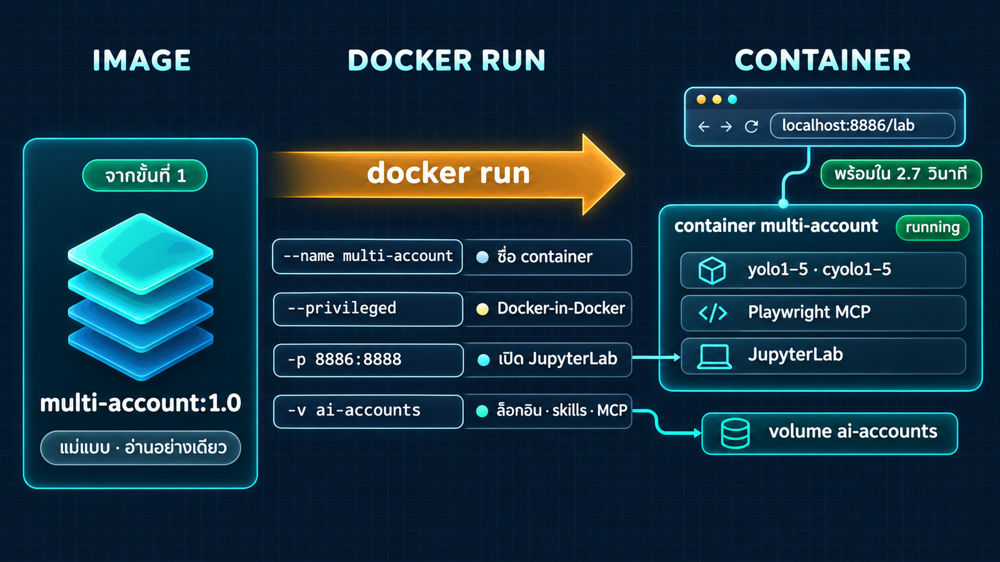
# รัน container ชื่อ `multi-account` จาก image `multi-account:1.0` ## 1. เตรียม image และ container ถ้ายังไม่มี image `multi-account:1.0` ให้ดึงจาก Docker Hub แล้วตั้งชื่อใหม่ ```bash docker pull tuchsanai/multi-account:1 docker tag tuchsanai/multi-account:1 multi-account:1.0 ``` ถ้ามี container ชื่อ `multi-account` อยู่แล้ว ให้ลบออก (ห้ามลบ volume `ai-accounts`) ```bash docker rm -f multi-account ``` ## 2. สร้าง container `PORT` เริ่มที่ `8886` ถ้าชนใช้เลขว่างถัดไป ```bash docker run -dit \ --name multi-account \ --privileged \ -p <PORT>:8888 \ -v ai-accounts:/root/ai-accounts \ multi-account:1.0 ``` จับเวลาตั้งแต่ `docker run` จน `http://localhost:<PORT>/lab` ตอบ `200` ## 3. ตรวจผ่าน `docker exec` แล้วสรุปเป็นตาราง - `yolo1..5 --version` และ `cyolo1..5 --version` - `cyolo1 mcp list` ต้องเห็น `playwright` - สถานะล็อกอินทุกบัญชี (ห้ามล็อกอินแทนผม ห้ามแก้ไฟล์ใด ๆ) - Claude: `yolo1` ถึง `yolo5` ใช้คำสั่ง `yoloN auth status` แล้วดูเฉพาะค่า `loggedIn` - Codex: `cyolo1` ถึง `cyolo5` ใช้คำสั่ง `cyoloN login status` - ตารางสรุป: image มาจากไหน (build เอง / pull) · URL ของ JupyterLab · เวลาที่ใช้ และตาราง บัญชี | เวอร์ชัน | ล็อกอินแล้ว/ยัง ห้ามแสดงอีเมล ชื่อองค์กร หรือ token - ถ้ามีบัญชีที่ยังไม่ล็อกอิน ให้บอกวิธีล็อกอินใน JupyterLab Terminal (พิมพ์ `yoloN` แล้วเลือก Claude account with subscription / พิมพ์ `cyoloN login --device-auth`)
| option | ความหมาย |
|---|---|
-dit | รันเบื้องหลัง (-d) พร้อม terminal (-it) |
--name multi-account | ตั้งชื่อ container |
--privileged | เปิดให้ใช้ Docker-in-Docker ภายใน container |
-p <PORT>:8888 | เปิด JupyterLab ที่ http://localhost:<PORT>/lab |
-v ai-accounts:/root/ai-accounts | volume เก็บล็อกอิน skill และ MCP ไม่หายเมื่อลบ container |
multi-account:1.0 | image ที่ใช้สร้าง container |
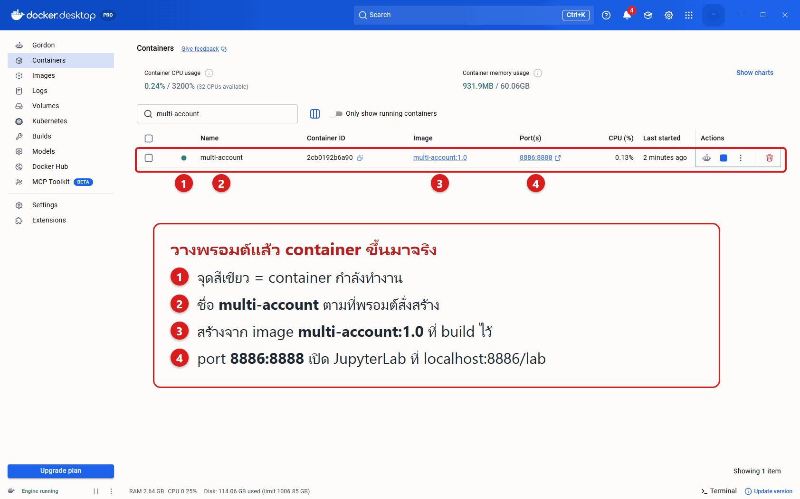
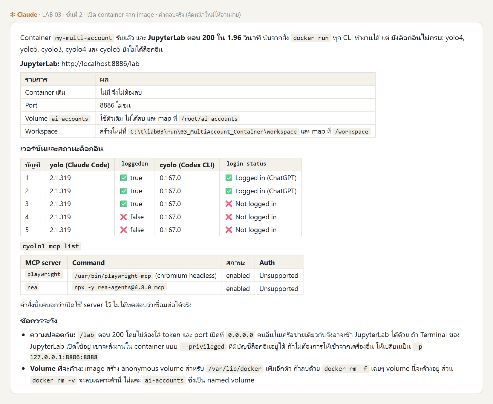
cyolo1 mcp list แสดง playwright ทันที เพราะโปรแกรมทั้งหมดอยู่ใน image แล้วเครื่องตัวอย่างใช้ volume ที่เคยล็อกอินไว้แล้ว 5 บัญชี ของผู้เรียนจะเป็น ❌ ทั้งหมดจนกว่าจะล็อกอินตามหน้าถัดไป · MCP rea มาจากแลปอื่นที่ใช้ volume เดียวกัน
| พิมพ์ | เลือก |
|---|---|
yolo1 … yolo5 | Claude account with subscription → ยืนยันในเบราว์เซอร์ → Yes, I trust this folder → /exit |
cyolo1 … cyolo5 | Sign in with ChatGPT หรือ cyolo1 login --device-auth หากเบราว์เซอร์ส่งผลกลับไม่ได้ |
ai-accounts จึงล็อกอินครั้งเดียว และยังใช้ได้แม้ลบ container หรือ build image ใหม่ทุกบัญชีค้นหาเที่ยวบิน BKK → Tokyo บน Google Flights · screenshot ทุกขั้น · รวมเป็น GIF (~5 นาที)
ค้นหาอย่างเดียว ไม่จองและไม่ชำระเงิน
# ทดสอบ Playwright MCP ในบัญชีที่ล็อกอินแล้วของ container `multi-account` ให้แต่ละบัญชีที่ล็อกอินแล้วใน container `multi-account` ทำงานต่อไปนี้ ห้ามล็อกอินแทนผม ห้ามแก้ไฟล์ตั้งค่า - ใช้ MCP ชื่อ `playwright` เท่านั้น ห้ามใช้ curl, python หรือ web search - เปิด https://www.google.com/travel/flights?hl=en - ค้นหาเที่ยวบินเที่ยวเดียว Bangkok (BKK) ไป Tokyo ชั้นประหยัด ผู้ใหญ่ 1 คน วันที่ 15 ของเดือนถัดไป - ค้นหาอย่างเดียว ห้ามกดจอง ห้ามกรอกข้อมูลส่วนตัว ห้ามชำระเงิน ห้ามล็อกอินเว็บไซต์ใด - screenshot ทุกขั้นตอนด้วย tool ของ playwright: เปิดหน้าเว็บ, กรอกต้นทาง-ปลายทาง, เลือกวันที่, ผลค้นหา - รายงานเที่ยวบิน 3 อันดับแรก (สายการบิน เวลาออก-ถึง ราคา) ตามที่เห็นบนหน้าเว็บ ถ้าหน้าเว็บไม่แสดงผล ให้รายงานตามจริง ห้ามเดาราคา เมื่อทุกบัญชีเสร็จ ให้รวม screenshot ของแต่ละบัญชีตามลำดับขั้นตอนเป็นไฟล์ `./evidence/<บัญชี>.gif` บนเครื่องผม
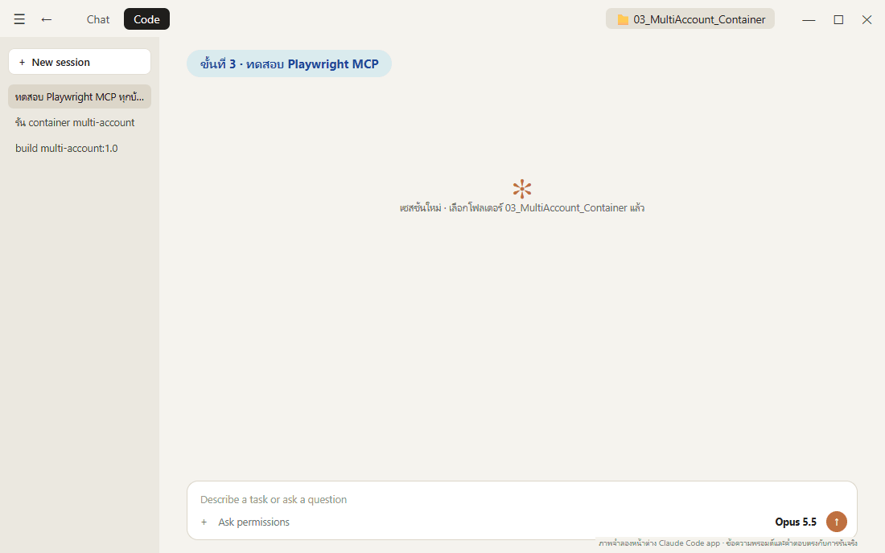
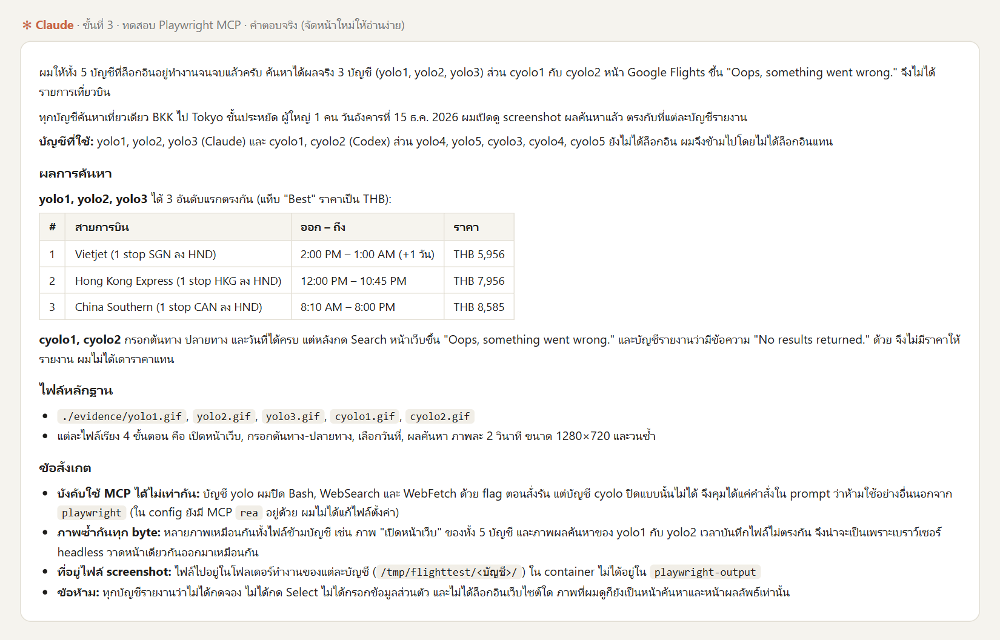
| บัญชี | ผล |
|---|---|
| yolo1–3 | ได้ผล อันดับ 1 Vietjet THB 5,956 |
| cyolo1–2 | หน้าเว็บ error "Oops, something went wrong." |
แต่ละไฟล์มี 4 ภาพ: เปิดหน้าเว็บ · กรอกต้นทาง-ปลายทาง · เลือกวันที่ · ผลค้นหา · ราคาของผู้เรียนจะต่างตามวันที่ค้นหา
| แบบที่ 2 · ติดตั้งใน container ที่กำลังทำงาน | แบบที่ 3 · build จาก Dockerfile | |
|---|---|---|
| ระบบหลายบัญชีอยู่ที่ | ใน container devtools | ใน image multi-account:1.0 |
| ข้อมูลล็อกอินอยู่ที่ | ใน container (หายเมื่อลบ) | ใน volume ai-accounts (คงอยู่) |
| เมื่อลบ container | ติดตั้งใหม่ + ล็อกอินใหม่ | docker run ใหม่ พร้อมใช้ทันที ไม่ต้องล็อกอินใหม่ |
| เครื่องใหม่ / แชร์ให้ทีม | ทำซ้ำทุกเครื่อง ผลอาจต่างกัน | build จาก Dockerfile เดียวกัน หรือ push image ให้ทีม pull |
docker rm -f ปลอดภัย แต่ docker volume rm ai-accounts หรือ prune --volumes ลบล็อกอินทุกบัญชี
ใช้ -p 127.0.0.1:8886:8888 หรือตั้ง JUPYTER_PASSWORD
ตรวจทุกครั้งก่อน push ขึ้น Docker Hub
ทุกบัญชีทำงานเป็น root คนเดียวกัน ไม่ใช่การแยกสิทธิ์ระดับ OS
ใช้ docker rm -f -v multi-account หากต้องการลบ volume ของ /var/lib/docker ด้วย
tuchsanai/multi-account:1 พรอมต์ขั้นที่ 2 pull แล้ว tag เป็น multi-account:1.0 ให้เอง
docker logs -f multi-account # ดู log ตอน start docker exec -it multi-account bash # เข้า shell ใน container docker stop multi-account # หยุด docker start multi-account # เริ่มใหม่ docker cp multi-account:/workspace ./backup # คัดลอกไฟล์งานออกก่อนลบ docker rm -f multi-account # ลบ container (ล็อกอินยังอยู่ใน volume ai-accounts) docker build -t multi-account:1.0 _solution/MultiAccountDevtool # build จากเฉลย
yolo1 auth status # สถานะล็อกอิน Claude cyolo1 login status # สถานะล็อกอิน Codex cyolo1 mcp list # ตรวจ MCP ของ Codex multi-account-install # รัน installer ซ้ำ (ไม่ทับของเดิม)